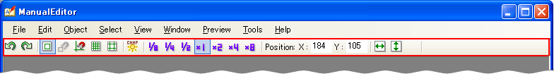

ツールバーはメインウィンドウのメニューの下に表示されます。

編集中に選択されているオブジェクトの種類によって、ツールバーで編集できる内容は変化します。
各ツールバーで共通の機能。
オブジェクトが何も選択されていないときに表示されます。
テキストオブジェクトが選択されているときに表示されます。
ピクチャオブジェクトが選択されているときに表示されます。
フレームオブジェクトが選択されているときに表示されます。